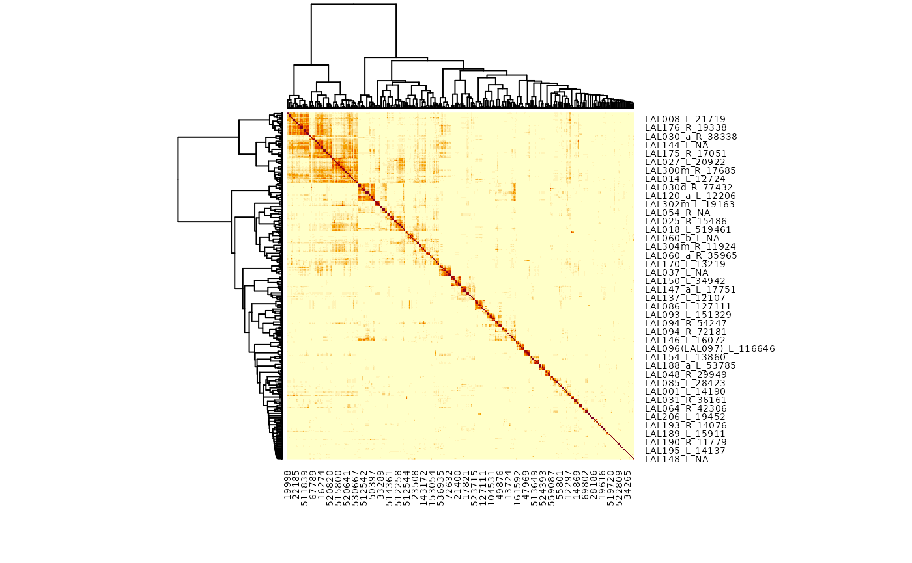

Cosine plot
Arguments
- ids
Bodyids in any form understood by
mcns_ids- partners
Whether to cluster based on connections to input or output partner neurons (default both).
- group
Optional character vector specifying the grouping column for the partner neurons when constructing the cosine similarity matrix.
TRUEimplies to'group'.- groupfun
A function which receives the metadata for all partner neurons and returns a single grouping vector (see the details section).
- labRow
A string interpolated by
glueusing the dataframe of metadata fetched bymcns_neuprint_meta. Alternatively a character vector with as many elements asidsdirectly specifying the rows.- predict.manc
whether to use
manc_bodyidpredicted matches to define grouping information in addition to curatedmanc_groupmatches. Seemcns_predict_groupfor details.- heatmap
A logical indicating whether or not to plot the heatmap OR a function to plot the heatmap whose argument names are compatible with
stats::heatmap.gplots::heatmap.2is a good example. Defaults toTRUEtherefore plotting the full heatmap withstats::heatmap.- metadata.source
Whether to use neuprint (
mcns_neuprint_meta) and clio ()- interactive
Whether to plot an interactive heatmap (allowing zooming and id selection). See details.
- action
Whether to zero out or drop any NA values in the cosine matrix (these may be present when some columns have no entries)
- threshold
An integer threshold (connections >= this will be returned)
- ...
additional arguments passed to
neuprint_cosine_plotand eventually toheatmap.
Value
The result of heatmap invisibly including the row and
column dendrograms.
Examples
# \donttest{
# cosine clustering based on grouped output partners (mainly DNs right now)
r=mcns_cosine_plot("/name:LAL.+", partners='out', group=TRUE)
#> Warning: Dropping: 93/24092 neurons representing 1646/862740 synapses due to missing ids!
#> Warning: diag(V) has non-positive or non-finite entries; finite result is doubtful

# }
if (FALSE) { # \dontrun{
# fancier labelling of rows including soma side of neurons
r=mcns_cosine_plot("/name:LAL.+", partners='out', group=TRUE,
labRow = '{name}_{group}_{mcns_soma_side(data.frame(bodyid, name, somaLocation))}')
r2=mcns_cosine_plot("/name:LAL.+", partners='out', group=TRUE,
labRow = '{instance}_{group}_{soma_side}', metadata.source='clio')
# interactive version (open in browser)
mcns_cosine_plot('/name:Pm2.*R', group=T, interactive = T)
# just return an hclust (dendrogram) object without plotting anything
pm2.hc=mcns_cosine_plot('/name:Pm2.*R', group=T, heatmap=FALSE)
plot(pm2.hc)
} # }